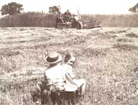
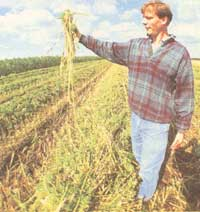
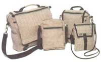
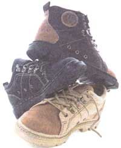
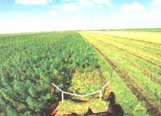

ENERGY & ENVIRONMENT
As American manufacturers buy increasing amounts of hemp from Europeans, American farmers argue they are missing out on a money making crop.
Americans are used to steeping in the irrational juices of their haphazard legal culture. A vintage crock is simmering over the issue of hemp cultivation. Begin with a good stock of muddy history, throw a revitalized back-to-the-land ethos permeating the mainstream, and you have the base for the policy dish that is "industrial hemp." What is at stake is not whether there will be a commerce in hemp products in the United States. That is already happening. The question is whether American farmers will participate.
Hemp advocates and people who work with it extol the long, strong fibers of the plant, the many uses to which its various parts can be put after processing, and its prolific growth relative to other plants used for similar purposes. Calvin Klein, Ralph Lauren and Adidas already proffer hemp products, as do Land's End and J. Peterman catalogues. Since the early '90s the number of hemp-oriented businesses in the U.S. has gone from estimates of about 20 near the beginning of 1992 to upwards of 300 and possibly closer to 500 today. A lot of these companies are fairly small outfits, though others are notching attention-fetching numbers, such as Sharon's Finest, a vegetarian foods company ranked 238 on Business Magazine Inc.'s 500 list.
Hemp's bucking ride into the mainstream American marketplace is driven more by economic and cultural factors-an emergent interest in natural fibers, for instance-than in any changes in law or new discoveries or inventions that alter the economic picture. At the same time, hemp products bolster and are bolstered by a worldwide renaissance in the development of hemp machines from specially-designed mowers to pulpers that can be fed the entire stock of plant. Chris Conrad, who in 1989 presciently founded the Business Alliance for Commerce in Hemp, a consortium of hemp product companies banded together to foster a more hospitable climate for trading in hemp goods, says, "The political-environmental shift is really what's driving it."
The hitch is, all hemp products manufactured for sale in the United States are made from hemp grown on foreign soil, in countries where it is legal to cultivate the crop. It is estimated that the cultivation of the fiber on U.S. soil would trim the price by 75 percent, while adding to the array of cash crops farmers could choose from. Across the republic, farm organizations including the the 4.5-million member American Farm Bureau, are calling to legalize industrial hemp farming. Several states have passed laws in favor of hemp cultivation. They have generally taken the form of providing for state-run test plots or allowing individual farmers to register as growers with the Drug Enforcement Agency (DEA). And the DEA has gone out of its way to prevent the crop from being cultivated. The agency won't say how many appli cations it has turned down, nor even how many it has received. In at least two states, special agents have actively opposed legislation allowing for hemp cultivation. The sponsor of a Colorado bill felt an eleventh-hour letter from the DEA, delivered less than three hours before the as sembly vote, killed the legislation.
Examples of inexpensive bags manufactured with hemp fiber.
ALL HEMP PRODUCTS... ...manufactured for sale in the United States are made from hemp grown on foreign soil.
The European Community has allowed the growing of hemp for years. The process requires that growers only use seed that is psychoactively inert. Cannabis horticulturalists measure the plant's drug potency in terms of a percentage of the plant's THC content. Levels below one percent THC, the psychoactive compound of primary interest to government regulators, are regarded as the industrial variety of the cannabis plant. All cannabis grown legally in Europe comes from seeds certified to be industrial grade, rather than pharmaceutical grade. Recently Canada and Jamaica have opened the door to hemp cultivation, joining a growing list of trading part ners including Germany, England, France, China, The Netherlands and the Ukraine. Put simply, hemp is not marijuana and can't be transformed into marijuana any more readily than pure heroin can be extracted from garden poppies. The linking of hemp and marijuana has more to do with old habits of the drug war than a reasoned concern for the public welfare.
Shoes made from hemp and other recycled materials.
Britain boasts 10,000 acres of the sweet-smelling crop, nestled in various secret locations throughout the balmy northern isle. (British officials don't want the crop growing out in the open and tempting misguided potheads who would steal the plants.) Jamaica is looking to the off-troublesome plant to revive its textile industry (In a twist on the usual cannabis-export relationship, an Atlanta-based company Alternative Import and Export, will reportedly advise the Kingston government on the fine points of raising the precious weed.)
Domestic commerce in hemp will continue to grow with or without a US. crop, says Ken Friedman, president of the nation's biggest hemp business, American Hemp Mercantile, Inc.. Valued at an estimated $75 million for 1995 and projected at $600 million by 2001, hemp commerce involves everything from lip balm and fanny packs to soaps, twine and clothing. American Mercantile sells mostly twine, all of it grown and processed in Hungary. The largest trafficker in hemp goods with almost $2 million in gross sales last year, American Hemp has tripled its sales volume in the course of two years and may issue a public stock offering in 1998.
"It's not so much that we need [U.S. grown hemp] for the existing hemp industry but for rural economic development," says Friedman. "The people losing out are farmers," and the people in their communities who would enjoy the benefits to local manufacturing.
By the time a domestic supply could become available, Friedman thinks he would have tapped out his Hungarian suppliers who may then be persuaded to share their methods with Americans just starting out. He sees a time frame of from one to two years before initial growing efforts get under way here, and perhaps five years before companies like his are relying on it as a commodity. Though in the next year one may watch the legal front for five or ten states to pass laws to grow hemp or study its prospects. In fact, this is a process already underway. "What we're really waiting for is something out of D.C. to take it out of DEAs hands," he says.
Mari Kane, editor and publisher of the trade magazine HempWorld, founded in 1993, concurs. Over the next year, says Kane, "There will be a lot of activity in the state legislatures, but unfortunately it's not gonna do us much good when the federal government steps in and says, `No, we're not gonna let you grow it: "
The backlash against hemp sometimes takes amusing forms. In Omaha, the executive director of anti-drug group Pride Omaha Inc. complained, "We're seeing more and more promotions of hemp and we're very much opposed to it." An employee at an Omaha bank laid claim to the illegal practice of removing dollar bills from circulation because many were turning up with the graffiti message scrawled by George Washington's mouth: "I grew hemp." (Though in Washington's day hemp cultivation was akin to growing cotton, his planting diaries reflect that he also grew a little of the plant for its drug properties, as was also common in his time.)
Feckless drug czar Lee Brown, in a gaseous outgoing moment, upbraided Adidas for marketing a shoe called, "The Hemp," labeling it a "cynical marketing game" and an attempt "to capitalize on the drug culture."
Adidas president Steve Wynne replied: "I don't believe you will encounter anyone smoking our shoes anytime soon." The company has since renamed the shoe "Gazelle Natural," and it sells with a label declaring its hemp composition.
As it happens, the commercial and agricultural breakthrough will be one and the same for hemp when the time comes. Northern California stationer John Stahl of the Evanescent Press has been applying for the legal grower's permit for more than three years, complying with every one of what he calls the "insane regulations" just because he really wants "to crack this nut open." There may be some encouraging news in his saga (his last government communication appears to give him the go ahead to plant a small amount of hemp), but he seems determined to keep at the authorities as long as it takes for him to get his permit. Of course, the same laws are blocking him from growing hemp for paper as block any other North American paper company from getting into cannabis.
"You can make lip balm all you want but that's not gonna change the world," says Stahl, characterizing most hemp trade in the U.S. as "all nickel and dime, little fanny packs .. . .Once we start making paper out of hemp it will put everything else in the shade."
HempWorld's Kane echoes his sentiment: "Hemp commerce can move forward without growing it ...the clothing, the fashion, the novelty items those will definitely continue, and those companies will never get rich, but it will continue definitely."
FARMERS GROWING ......hemp instead of corn will not only be increasing the fertility and condition of their soil, but may well find themselves earning several hundred dollars more per acre.
Fortune 500 companies don't come blazing down the hillside trumpeting for all the world to know they have become advocates of social change. But International Paper's membership in the North American Industrial Hemp Council places it among those who are working to legalize the growing of psychoactively inert cannabis. In response to economic and environmental concerns, the company is evaluating the potential of hemp and other natural fibers for making paper. (The company already operates a mill in Colombia using begasse, a fibrous South American plant.) Hemp stocks would never supplant wood pulp al together, points out International Paper spokesperson Neal Lincoln. But it won't supplant anything if it can't be grown legally. Does the world's largest paper manufacturer intend to shape policy? "Our involvement in the North American Industrial Hemp Council is right now the way we're attempting to influence policy on the issue. That's a group that's interested in legalizing the growing of industrial hemp. To the extent we can help in that, we will," says Lincoln. International Paper uses 50 million tons of wood fiber a year and employs more than 50,000 people just in the U.S. If the company finds that hemp is where it's at, access to a domestically-grown supply is "important," says Lincoln.
In its information-gathering efforts, International Paper wants to learn, "What does it take to grow and harvest and use hemp? We know how to do that with wood; we have to learn with hemp," says Lincoln.
"All paper companies in North America are looking for fibers other than wood," says Patrick Girouard, economic analyst with Resource Efficient Agricultural Production (REAP)-Canada. Though agricultural subsidies of other fiber crops like cotton economically militate against hemp for certain applications, it can find a niche in the short term replacing soft woods for paper pulp. "Over the next 20 years the world demand for paper products will double, especially in Asia," says Girouard. He too sees cultural factors drawing attention to hemp. "When you talk about hemp it's catchy. Just because it's illegal, people show more interest in the beginning." This, coupled with a global movement to remove price supports from agricultural commodities should augur well for hemp's prospects. Within a few years programs in British Columbia, Saskatchewan and Ontario will begin to yield the data to run bona fide economic analyses, he says.
The U.S. Department of Agriculture spokesperson calls hemp a good fiber, but "institutional constraints" pose "overwhelming" obstacles to studying it.
USDA's Jeffrey Gain, chairman of the board of the Alternative Agriculture Research and Commercialization Corp., has said, "Anybody who comes to the conclusion that hemp is not viable is probably not fully aware..."
The state of Wisconsin angered regional drug warriors last spring by organizing a conference on the commercial cultivation of hemp. Erwin Sholts of the state's Department of Agriculture figured hemp acreage to be worth "in the neighborhood of a couple hundred dollars more than corn." And its root system is "good for fragile soils," he said.
Hemp roots, nine to fourteen inches long, condition the soil and provide the plant good water access. It is highly pest resistant and the crop requires minimal treatment with farm chemicals. Advocates of hemp commerce look to the day when hemp grown in the U.S. can support value added economies in rural areas, where the commodity will be grown, processed, and sold in the same community, providing jobs and supporting the local tax base. They refer to this concept as "bioregionalism." It should sound familiar to patrons of farmers markets and organics enthusiasts.
Bioregionalism-conveniently if coincidentally-short-circuits one of the primary federal grounds for interference with the hemp trade, namely the issue of interstate commerce. Though federal law regulates the cannabis plant as a schedule one narcotic (thus setting up the DEA as the gatekeeper for growers permits), other federal statutes only come into play when the product is moved between states. If it always stays in the state, there's no issue.
Bioregionalism is also plain sound economics. It's what makes access to a domestic supply a crucial developmental issue for International Paper.
Interestingly, this movement toward a more traditional agriculture, as hemp proponents tend to position themselves, makes skillful use of modern media, principally the World Wide Web. Almost all of the major hemp organizations have Internet addresses, and product labels and political brochures will direct you to them. The effect makes for a coherent web presence. The success of this strategy at educating the public about the potential benefits of hemp agriculture may well determine whether the political climate can support changes in the law to make it possible.
Nearly 4,000 acres of industrial hemp is grown in Holland and Germany, and world markets crave more.
Every season brings its crop of hemp conferences, internationally and within North America. Past conferences have provided opportunity for growers and manufacturers to meet each other, and for people in similar businesses to troubleshoot together, just as happens at producer and manufacturer conventions for any other commodity. As the hemp industry matures, these gatherings assume a changing significance. A hemp symposium that took place in February in Vancouver, partially bankrolled and publicly supported by the Bank of Montreal, began the process of hooking up hemp entrepreneurs with sources of capital. As hemp commerce becomes more recognizably part of the mainstream economy, it will be easier to push for the political reforms necessary for people to grow it.
Meanwhile people are getting experience. In the United States that will mean continuing to sell and develop products that consumers will like and buy and show off. Elsewhere that means actually growing and processing it. Marcel Hendriks, director of Hemp-Flax, a European pioneer in working with hemp fibers, grows 3,000 acres of hemp in The Netherlands. (Ironically, he points out, the outdoor growers of pharmaceutical cannabis complain about the fertilization of their plants by his industrial hemp fields female plants must remain separated from male pollen to produce the potent, psychoactive flowering tops.) "We were fortunate to have people who already knew about handling fibers; flax is as near as you can get to hemp," says Hendriks. The tide of recent years has been flowing with hemp. When he established the company in 1994, natural fibers were drawing a little attention, but very little was going on with hemp in particular. "Now every car company in Europe is doing tests with natural fibers," says Hendriks, who has processed hemp for Mercedes though the car company is not yet a regular client. Conrad explains the utility of hemp in autos: "Glass shatters, fiber bends."
Hemp's emergent popularity fits with other national trends in support of ecofriendly commerce generally, wherein the market for organic foods is doubling every three years or so. "I think we need to be a part of that movement," says American Hemp's Friedman. "It's part of the same kinds of consumers."
SIMPLY PUT ... ...hemp is not marijuana and can't be transformed into marijuana any more readily than pure heroin can be extracted from garden poppies.
According to Frank Riccio Jr., president of Danforth International, the global leader in non-wood pulp-supply, cultural faddism "accounts for a big part of [the national interest in hemp]." In terms of the global market for pulp alternatives to wood, however, there are other places to turn than hemp. REAP-Canada's Girouard says switchgrass, staple of the historical bison and well-adapted to marginal land, "will take off before hemp:'
Riccio emphasizes the unexhausted potential of what we already grow "What we're underutilizing is ag residue;" explains Riccio. In economic terms, reclaiming all the lost fiber of castaway leavings from corn, wheat, and flax makes more sense than looking to hemp as a new fiber crop.
No doubt, American industry neglects the utility of agricultural by-products. But International Paper has eyed the same economic landscape as Riccio and decided that hemp is worth a good look.
Murky waters lie between hemp advocacy and a politics associated with liberalizing the marijuana laws. Many of those in favor of allowing farmers to grow hemp want nothing to do with pot politics. "Hemp is absolutely separate from the marijuana issue," says Sholts.
While Conrad salutes the efforts of Sholts and others for whom the separation is mandatory, in his view, "We're stronger when we work together. Part of the process of the federal government is dividing and conquering. It's better for us to recognize commonalties [and to] resist convoluted methodologies."
For hempsters, the post-Prohibition marijuana reforms were a backdoor method of securing the fortunes of petrochemical and timber interests (DuPont and Hearst), who wanted hemp out of the way. It is these and not drug laws across the-board they wish to undo.
Though President Clinton has yet to weigh in on the industrial hemp issue, he signed an executive order a year and a half after taking office setting national defense priorities for "the production and alloca tion of `food resources' (which is defined to include hemp)."
HEMP ORGANIZERS say about ten statesare in the midst of passing pro-hemp laws, but concede that they won't matter practically as long as the DEA is given final say.
At the end of the day, the development of a new hemp agriculture in this country will depend more on consumer demand than some economic imperative that the United States become a hempen kingdom. There is perhaps too much ease with which its supporters refer to the well-known environmental degradations of cotton. (There's a reason they call it King Cotton.) Inasmuch as some people want to point to hemp's rich history in the life of the nation, cotton's is richer and it's not forgotten. Domestic cotton production topped eight billion pounds last year. Likewise with trees; it may be good to throw hemp into the mix of pulp sources for making paper but virtually no one believes that forestry's epitaph will be written on hemp paper.
In the coming year one may anticipate the continued development of hemp commerce in the United States and some political waves on the state level. Hemp organizers plan for about ten states to pass pro-hemp laws in the spring and fall but readily concede it won't matter practically as long as the DEA is given final say. Politically, the prospects for a domestic hemp agriculture rest with Washington. Unless the DEA shifts its stance, either the White House must issue an executive order, or the Congress must pass a special law, for hemp to be grown in this country. Theoretically, the DEA leaves open the possibility that it will actually approve one of these registration applications. Theoretically, time moves backwards if you run fast enough.
As consumers demand natural fiber products, and business people and farmers learn how to grow, reap and process such fibers, the diverse marketplace of the future will take form. But there is nothing inevitable here, no "Hemp is coming" skywriting to descry on the far horizon. If and when hemp happens, it will be because-as a nation we made it happen.
|
 Harvesting hemp in Kentucky in 1943 |
 and in Holland last year MALCOLM MACKINNON |
 JAMES WORRELL |
|
 MALCOLM MACKINNON |
 |
|